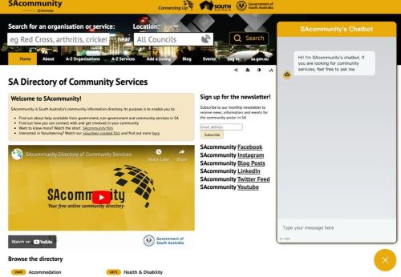
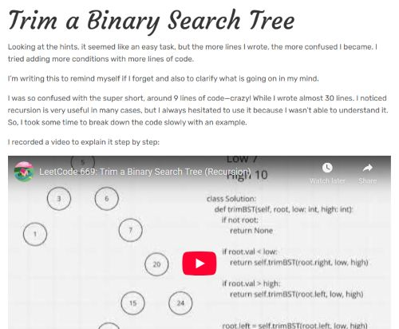

Profile
A unique combination of computer science and medical expertise, with a strong passion for healthcare technology. I specialize in AI-driven solutions, backend development, and software engineering, eager to apply my knowledge to meaningful projects that bridge technology and healthcare.
Back to homepageProjects

SACommunity Chatbot Project
Key Skills: Python, LangChain, Flask, Docker, Agile Software Development
Developed an AI-powered chatbot which uses Large Language Model and semantic search to enhance the search functionality of a not-for-profit organization's database (15,000+ records). Utilized LangChain to implement a Retrieval-Augmented Generation (RAG) chatbot, providing accurate and context-aware search results.
Project Report GitHub Repository
LeetCode Diary
Key Skills: Python, Algorithms, Data Structures, Object-Oriented Programming
A personal diary where I document my learning journey while solving LeetCode problems. This helps me improve my coding skills, deepen my understanding of key concepts, and track my progress. The diary is a work in progress, and I will continue adding content as I practice and learn more.
Explore LeetCode Diary Watch on YouTubeWork Experience
Software Development Intern
YourAnswer International Pty Ltd, Adelaide
July to October 2024
Developed automated evaluation software to compare the semantic search performance of different embedding models, chunking methods, and vector stores. Conducted extensive research and provided detailed technical documentation to facilitate future improvements.
Key Skills: Python, Bash (Linux), AI/ML (Embeddings, Vector Search), Docker, OpenSearch
Key Achievements:
- Designed and implemented a Python-based automation tool to streamline semantic search evaluation.
- Identified and fixed a logic error in the company’s main code, which caused incorrect ranking in semantic similarity, significantly improving search accuracy.
- Conducted extensive experimentation and benchmarking with top-ranked embedding models from the MTEB leaderboard on Hugging Face.
- Benchmarked and optimized semantic search performance across multiple vector stores, including OpenSearch.
- Documented experimental results and written comprehensive technical reports to ensure effective knowledge transfer.
Industry Project Intern
Connecting Up, Infoxchange, Adelaide
March to June 2024
Led backend development for a full-stack AI-powered chatbot as part of a four-member team for SAcommunity, a not-for-profit organization.
Key Skills: Python, LangChain, Flask, Docker, Agile Software Development
Key Achievements:
- Led backend development, successfully integrating the LangChain library to enable LLM-based tool calls and semantic search, resulting in an Agentic RAG (Retrieval-Augmented Generation) chatbot capable of handling vague human queries with high accuracy.
- Optimized chatbot performance by applying advanced prompt engineering and retrieval strategies to improve response relevance.
- Deployed the chatbot using Docker, resolving compatibility issues within an outdated software environment and ensuring smooth operation.
- Worked closely with frontend developers and stakeholders to refine chatbot functionality for real-world use cases.
Summer Research Project Scholarship Intern
Australian Institute of Machine Learning (AIML), Adelaide
December 2023 to February 2024
Gained my first exposure to machine learning in healthcare settings.
Key Skills: Python, Data Analysis(Pandas, Matplotlib, Seaborn), Machine Learning(Scikit-Learn)
Key Achievements:
- Collaborated with healthcare experts and machine learning specialist to explore AI-driven decision-making solutions for medical applications.
- Processed and analyzed a large-scale healthcare dataset containing 6,000+ patient records, developing machine learning models to predict patient outcomes.
- Researched and reviewed AI-driven predictive analytics in healthcare, integrating insights into model design.
- Presented findings at the end of the internship to a panel of researchers.
Education
Master of Computing and Innovation
University of Adelaide, Australia, 2023 - 2024
GPA: 6.83/7 | Courses completed: Computer Networks & Applications, Introduction to Statistical Machine Learning, Computer Systems, Operating Systems, Algorithm and Data Structure Algorithm Analysis, Software Engineering and Project, Project Management Fundamentals
Bachelor of Medicine, Bachelor of Surgery (MBBS)
University of Malaya, Malaysia, 2009 - 2014